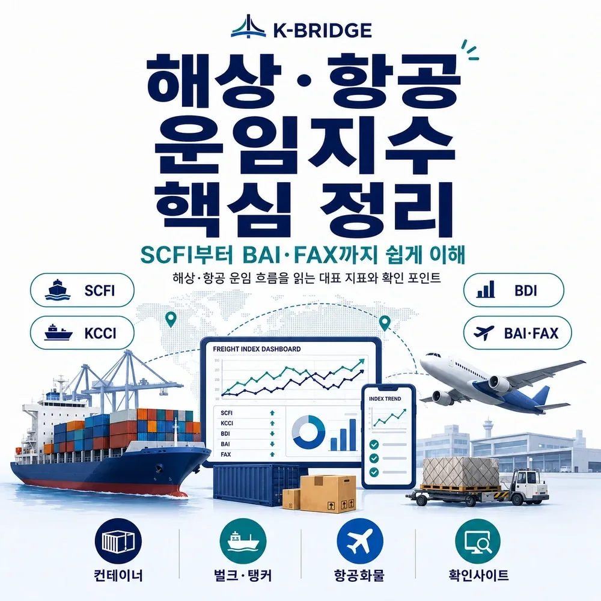
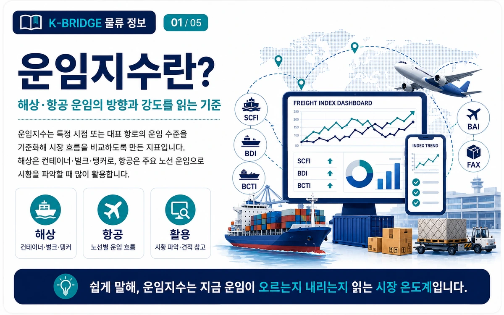
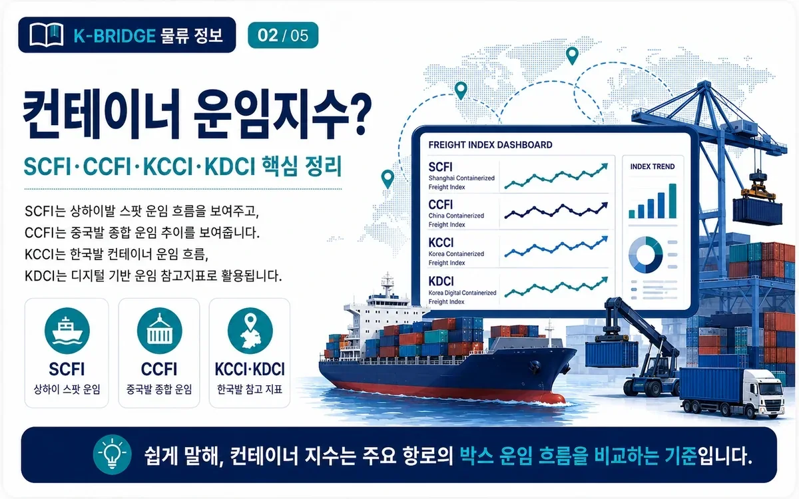
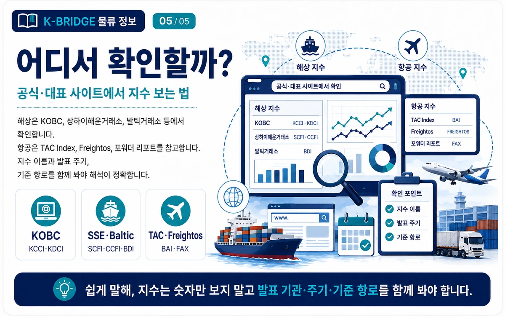

해상 및 항공 운임지수 완전정리
SCFI·KCCI·BDI·KDCI·BAI·FAX 보는 법
운임지수는 단순한 숫자가 아니라 선복 수급, 물동량, 항로 혼잡, 연료비, 지정학적 리스크가 운임에 얼마나 반영되고 있는지 보여주는 시장 지표입니다. 컨테이너·벌크·탱커·항공화물별로 어떤 지수를 봐야 하는지, 어디서 확인하는지 최신 기준으로 정리했습니다.

먼저 결론부터
컨테이너 수출 운임은 SCFI·KCCI, 건화물 벌크는 BDI·KDCI, 탱커는 BDTI·BCTI, 항공화물은 BAI·FAX를 중심으로 보면 됩니다. 다만 지수는 시장의 방향을 보여주는 기준값이므로 실제 선적 견적과는 다를 수 있습니다.

1. 운임지수란 무엇인가요?
운임지수는 운송 시장의 가격 흐름을 비교하기 위한 벤치마크입니다. 특정 기준시점이나 대표 항로·선형의 운임을 기준으로 지수화하거나, 실제 운임을 USD/TEU·USD/FEU·USD/kg 등의 방식으로 집계해 시장 변화를 보여줍니다.
운임은 노선, 물량, 계약 형태, 장비, 유류비, 성수기, 선복 공급, 항만 혼잡, 전쟁·제재·관세 등의 영향을 빠르게 받습니다. 따라서 화주와 포워더는 단일 지수 하나보다 자신의 화물 유형과 출발지에 맞는 지수를 함께 보는 것이 중요합니다.

2. 컨테이너 해상 운임지수
Shanghai Containerized Freight Index
상하이발 주요 항로의 스팟 컨테이너 운임 흐름을 보여주는 대표 지수입니다. 유럽·미서안·미동안·한국 등 주요 노선을 포함하며 주간 시장 변화를 빠르게 반영합니다.
China Containerized Freight Index
중국 주요 항만 출발 컨테이너 운임을 종합한 지수입니다. 단기 스팟뿐 아니라 계약 운임 흐름까지 보다 넓게 반영하는 지표로 활용됩니다.
KOBC Container Composite Index
한국해양진흥공사가 발표하는 부산항 출발 기준 한국형 컨테이너 운임지수입니다. 북미·유럽·중동·호주·중남미·아프리카·중국·일본·동남아 등 13개 노선을 반영합니다.
글로벌 비교 지수
Drewry WCI와 Freightos Baltic Index(FBX)도 글로벌 컨테이너 스팟 운임 비교에 널리 쓰입니다. 공개 범위와 노선 구성이 지수마다 다르므로 동일 숫자로 직접 비교하면 안 됩니다.
2026년 변경사항: 2026년 6월 18일부터 SCFI·CCFI 등 7개 컨테이너 지수의 편제·발표 주체가 Shanghai Shipping Research Institute(준비기구)로 조정되었고, 기존 Shanghai Shipping Exchange 사이트에서도 조회할 수 있습니다.
3. 벌크·탱커 해상 운임지수
BDI - Baltic Dry Index
BDI는 철광석·석탄·곡물 같은 건화물을 운송하는 벌크선 시장의 대표 벤치마크입니다. 현재 Baltic Exchange 기준으로 Capesize 40%, Panamax 30%, Supramax 30%의 타임차터 평균을 조합해 산출합니다. 컨테이너 운임지수가 아니므로 FCL/LCL 운임 판단에 직접 적용하면 안 됩니다.
KDCI - KOBC Drybulk Composite Index
한국해양진흥공사가 제공하는 한국형 건화물선 종합지수입니다. Capesize·Panamax·Supramax·Handy 세부 시장을 함께 확인할 수 있어 국내 실무자가 벌크 시황을 보기 좋습니다.
BDTI / BCTI - 탱커 운임지수
원유 운송은 BDTI(Baltic Dirty Tanker Index), 정제 석유제품 운송은 BCTI(Baltic Clean Tanker Index)가 대표적입니다. Worldscale(WS) 방식 역시 탱커 항로의 기준 운임을 표현할 때 폭넓게 사용됩니다.
4. 항공화물 운임지수
BAI - Baltic Air Freight Index
BAI는 TAC Index가 산출하고 Baltic Exchange 벤치마크 체계에서 활용되는 대표 항공화물 운임지수입니다. 홍콩, 상하이, 프랑크푸르트, 런던, 시카고, 싱가포르 등 주요 허브의 아웃바운드 지수와 노선별 운임을 보여줍니다.
항공은 해상보다 시장 반응이 빠르기 때문에 주간 변동률, 허브별 지수, 실제 USD/kg 수준을 함께 보는 것이 중요합니다. TAC Index는 2026년에도 한국 출발을 포함한 아시아 노선 데이터 범위를 확대하고 있습니다.
FAX - Freightos Air Index
Freightos Air Index는 WebCargo의 실제 디지털 예약 운임과 제시 운임 데이터를 기반으로 산출되며, 전일 기준 최근 7일 롤링 방식의 대표적인 항공화물 가격지표를 제공합니다. 일반 화물의 여러 중량 구간별 USD/kg 지표를 제공하는 것이 특징입니다.
5. 2026년 최신 공개값, 어떻게 봐야 하나요?
운임지수는 매일 또는 매주 바뀌므로 아래 숫자는 작성일 기준 공식 페이지에서 확인 가능한 최근 공개값의 예시입니다. 숫자 자체보다 방향과 노선별 차이를 읽는 용도로 보세요.
TAC Index의 공개 대시보드에서는 2026년 6월 29일 기준 글로벌 BAI00이 2,623으로 표시되었고, 당시 전주 대비 -5.0%, 전년 대비 +31.3%였습니다. 이후 값은 계정·공개 범위에 따라 대시보드에서 갱신 확인이 필요합니다.
포인트: 같은 시기라도 미서안, 미동안, 유럽, 중동, 동남아의 방향이 서로 다를 수 있습니다. 종합지수만 보지 말고 실제 선적 예정 항로의 세부 지수까지 확인하세요.

6. 해상·항공 운임지수 실제로 어디서 보나요?
| 지수 | 발표·제공 기관 | 주요 용도 | 확인 |
|---|---|---|---|
| KCCI / KDCI | 한국해양진흥공사(KOBC) | 부산발 컨테이너·건화물선 시황 | KOBC 공식 |
| SCFI / CCFI | Shanghai Shipping Research Institute / Shanghai Shipping Exchange | 상하이·중국발 컨테이너 시황 | 공식 지수 |
| BDI / BDTI / BCTI | Baltic Exchange | 벌크·탱커 국제 벤치마크 | Baltic Exchange |
| BAI | TAC Index / Baltic Exchange | 항공화물 주요 허브·노선 | TAC Dashboard |
| FAX | Freightos | 디지털 예약 기반 항공화물 가격 | Freightos FAX |
7. 실무에서는 이렇게 활용하세요
- 수출 컨테이너: 한국발이면 KCCI를 먼저 보고 SCFI·WCI·FBX로 글로벌 방향을 교차 확인합니다.
- 벌크 화물: BDI만 보지 말고 실제 선형에 맞는 Capesize·Panamax·Supramax 세부지수와 KDCI를 함께 봅니다.
- 항공화물: BAI·FAX의 방향과 실제 허브별 USD/kg 수준, 유류할증료, 스페이스 상황을 같이 확인합니다.
- 계약 협상: 지수 상승·하락이 연속되는지 확인해 스팟/단기/장기 계약 비중을 조정하는 참고자료로 사용합니다.
- 주의: 지수는 평균·대표값입니다. 실제 견적은 출발지, 도착지, 품목, 중량·CBM, 시즌, 선사·항공사, 환적 여부에 따라 달라집니다.
자주 묻는 질문
Q. SCFI와 KCCI 중 한국 수출기업은 무엇을 더 봐야 하나요?
한국발 실무에는 부산항 출발 13개 항로를 반영한 KCCI가 직접적입니다. 다만 글로벌 컨테이너 시장의 방향은 SCFI를 함께 보면 더 잘 읽을 수 있습니다.
Q. BDI가 오르면 컨테이너 운임도 반드시 오르나요?
아닙니다. BDI는 건화물 벌크선 시장 지수입니다. 컨테이너선과 수급 구조가 달라 같은 방향으로 움직이지 않을 수 있습니다.
Q. 항공화물은 왜 BAI 하나만 보면 부족한가요?
항공은 허브별·노선별 편차가 크고 변동이 빠릅니다. BAI와 FAX, 실제 USD/kg, 유류할증료, 스페이스 상황을 함께 보는 것이 좋습니다.
Q. 운임지수 숫자로 실제 견적을 계산할 수 있나요?
정확한 견적 계산에는 부적합합니다. 지수는 시장 방향을 파악하는 벤치마크이고 실제 운임은 개별 화물 조건과 계약에 따라 달라집니다.
지수는 시장을 읽는 기준, 실제 선적은 견적으로 확인하세요
출발지·도착지·품명·중량·CBM·컨테이너 규격을 알려주시면 해상·항공 운임과 현재 스페이스 조건을 함께 검토할 수 있습니다.